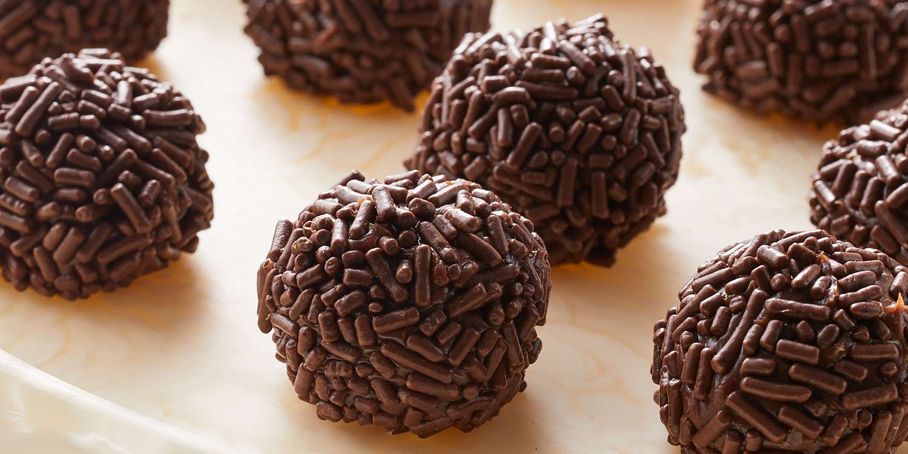

These traditional Brazilian sweets are the perfect dessert for any occasion! Made with just four ingredients, these brigadeiros are rich, creamy, and delicious.
Ingredients
- 1 tablespoon butter
- 14 oz sweetened condensed milk (395 g)
- ¼ cup cocoa powder (30 g)
- 1 cup chocolate sprinkle (160 g), as needed
Preparation
- In a pot over low heat, melt the butter, condensed milk, and cocoa powder, stirring continuously until you can see the bottom of the pot for 2-3 seconds when dragging a spatula through.
- Pour onto a greased plate, then chill for 1 hour.
- Shape and roll the chilled mixture into balls.
- Roll the balls in chocolate sprinkles.
- Enjoy!